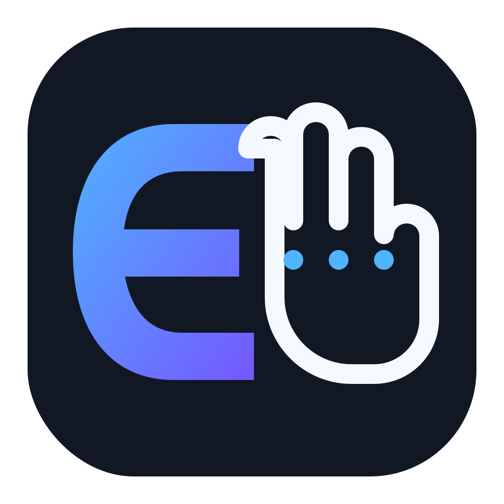

Камера та жести
MediaPipe розпізнає руку, згини пальців і готові жести в реальному часі.

Є-Рука ЗавантажитиРОБОТИЗОВАНА КИСТЬ · WINDOWS 10/11
Керуйте сімома сервоприводами через камеру, жести, сенсорну рукавицю або точну ручну панель. Прошивання ESP32 вже всередині.
Останній реліз · Windows x64 · Без Python та Arduino IDE
МОЖЛИВОСТІ
Застосунок об'єднує комп'ютерний зір, Serial-зв'язок, калібрування та обслуговування механіки.
MediaPipe розпізнає руку, згини пальців і готові жести в реальному часі.
Окрема вісь для кожної серви, глобальний стиск і миттєва аварійна зупинка.
Другий COM-порт, жива індикація каналів і профільне перетворення сенсорів у кути.
Робоча й сервісна прошивки встановлюються з інтерфейсу без сторонніх програм.
Ліміти, нейтральні позиції, швидкісні фільтри й сервісний тест однієї серви.
Українська й англійська мови, три теми, інсталятор, ярлик і деінсталятор.
ШВИДКИЙ СТАРТ
Запустіть інсталятор, виберіть мову, тему й ярлик.
З'єднайте ESP32 через USB та виберіть її COM-порт.
Встановіть робочу прошивку на сторінці «Обслуговування».
Спочатку протестуйте осі без навантаження, потім увімкніть передачу.
ГОТОВО ДО РОБОТИ
Інсталятор містить застосунок, моделі розпізнавання, прошивки та інструмент ESP32.
СУМІСНІСТЬ